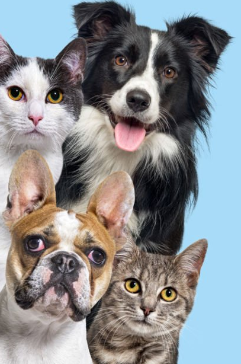
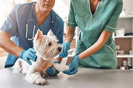
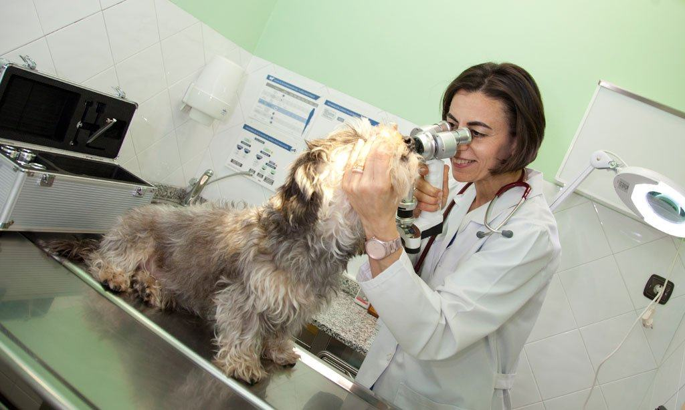
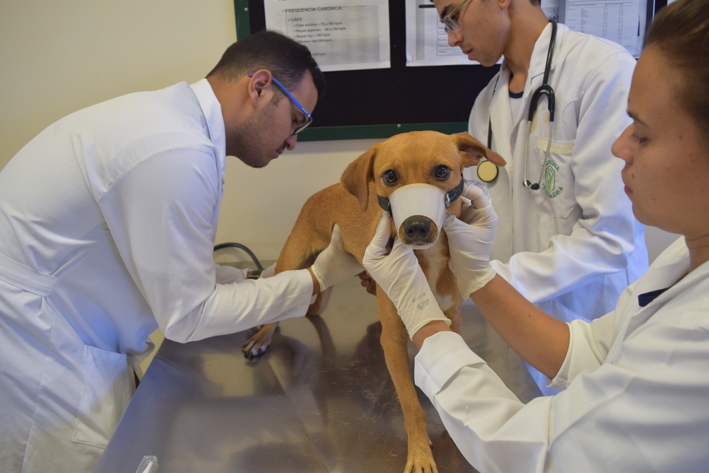
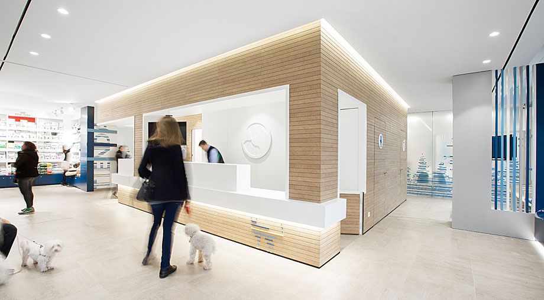
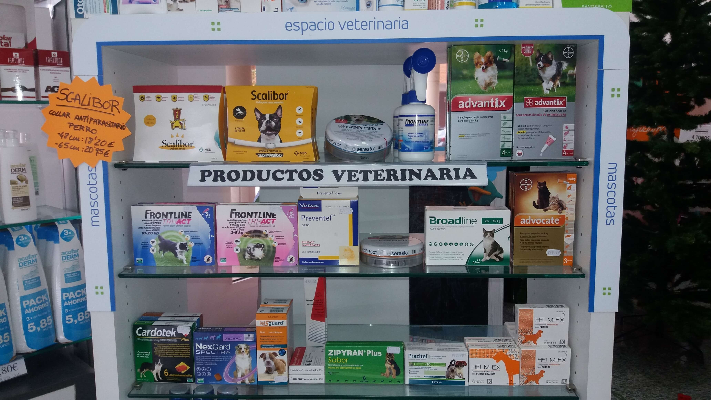
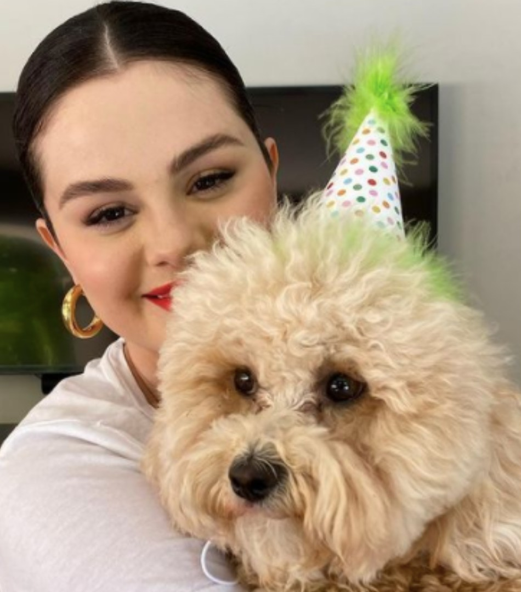
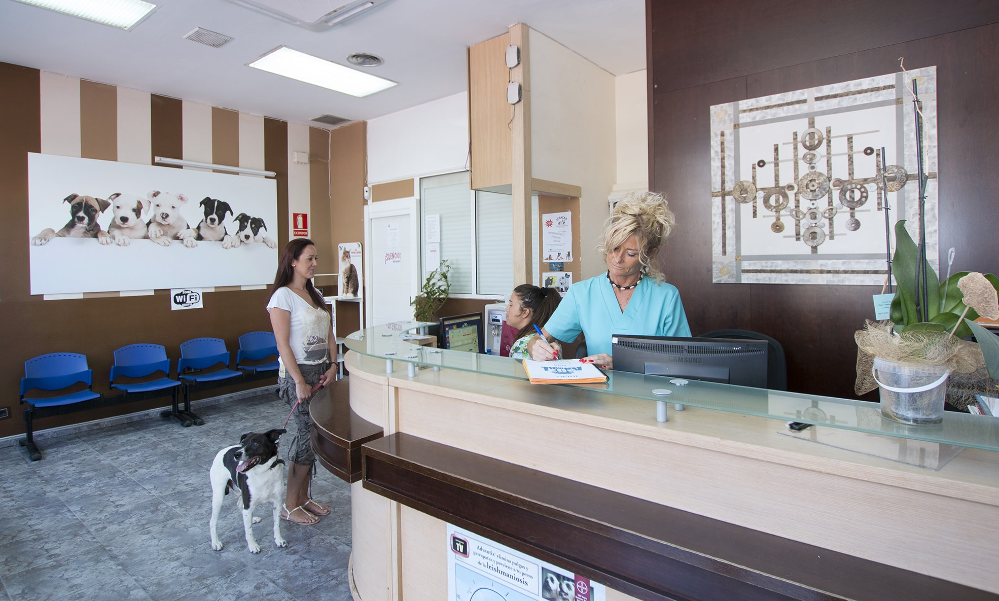

Clinica veterinaria

Quienes somos
1
Somos una clínica veterinaria donde ayudamos a que tu mascota tenga una vida sana y feliz, disponemos de una gran variedad de servicios veterinarios, planes de salud para mascotas personalizados que se adaptan a las necesidades de tu mejor amigo en cada etapa de su vida y un centro de belleza animal. No hay nada más hermoso que tu mascota esté sana, tanto para los que lo rodean como para su propio bienestar. Por eso, el equipo se esmera al máximo para proponerte el mejor diagnóstico, tratamiento y plan de prevención donde nos caracterizamos por un buen clima de confianza y una atención de primera línea.
Su salud nos importa
2
No solo encontrarás un excelente servicio al cliente. Nuestra atención médica veterinaria es de la más alta calidad y ofrecemos una gama completa de servicios veterinarios integrales con diagnósticos y tratamientos completos.
Portafolio

Clinica veterinaria

Clinica veterinaria

Clinica veterinaria

Clinica veterinaria
Clinica veterinaria
Clinica veterinaria

Clinica veterinaria

Clinica veterinaria
Que dicen nuestros clientes
Julio Camargo
Mi perro estaba muy malito hasta que acudí con el al centro veterinario, desde la primera persona que nos atendió a la ultima ha sido espectacular. Puedo decir que es en el mejor sitio que he acudido con dobby cuando ha estado malito.

Marta Jaramillo
Estoy muy contenta con esta clínica han salvado la vida dos veces de mi perrita noa, entro por dos hernias y actualmente mi perrita esta andando. El trato es muy bueno desde que entras por la puerta hasta que sales, el amor que tienen por los animales se nota y son todos unos profesionales.
Nuestros Producto

Atención Veterinaria 24 horas
La clínica veterinaria permanece abierta día y noche los 365 días al año, con todos sus servicios a pleno rendimiento. Aunque trabajamos con cita previa, nuestras instalaciones y especialistas nos permiten dar respuesta a cualquier paciente que necesite la atención veterinaria, no importa la hora del día que sea, si es fin de semana o festivo.
Medicina general
A nuestra clinica llegan los casos remitidos más complicados, agudos y crónicos y que en muchas ocasiones requieren de una intervención compleja, disponemos de un personal especializado en realizar un asesoramiento sobre alimentación y dietas, totalmente personalizada y con un control periódico ya que en cada edad y caso se requiere distintos tipos de alimentación.
Diagnóstico por Imagen
En nuestro hospital veterinario disponemos de los servicios de cardiología, ecografía y radiología, mejorando la calidad de vida ya que podemos tratar las patologías cardiacas obteniendo imágenes del interior de nuestras mascotas y por lo tanto diagnosticar eficazmente cualquier patología, en caso urgente, llámanos y acude a cualquier hora.